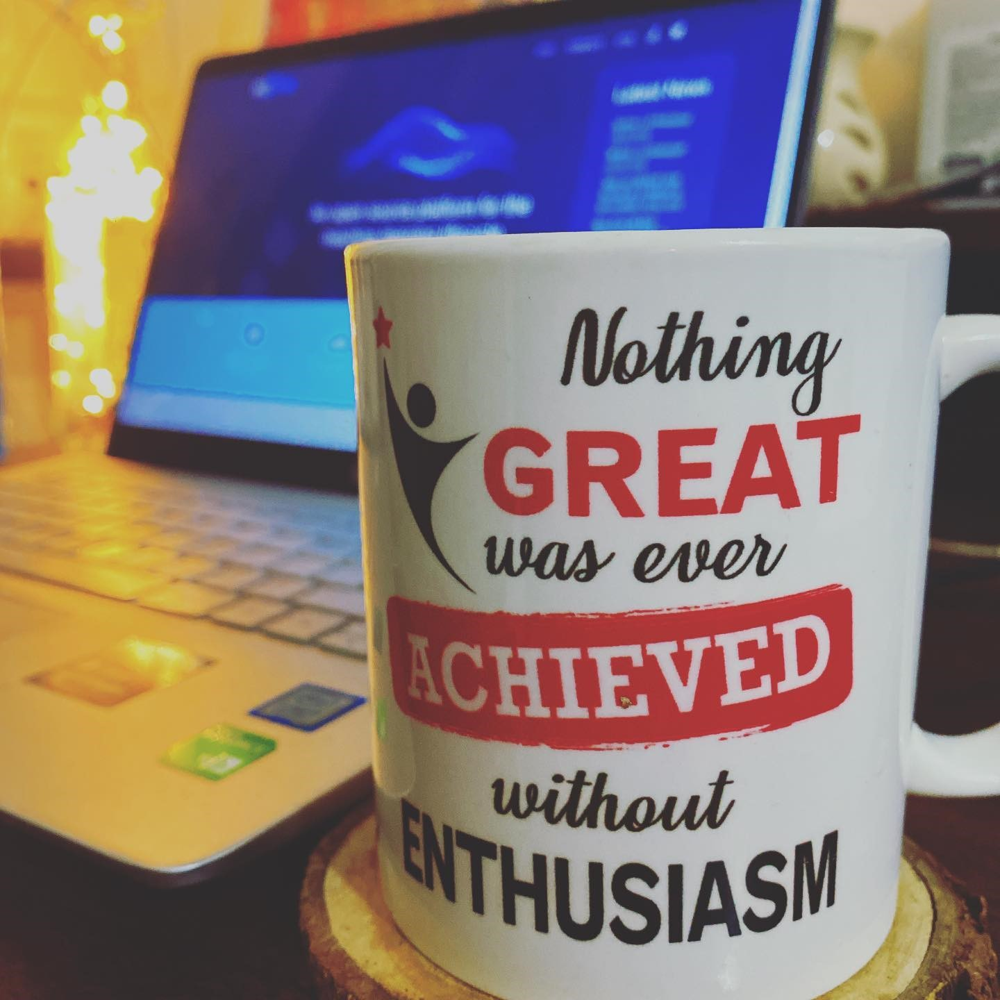

Intro

I ❤️ Technology,
Collaborative and Passionate Computer Science Engineer.
• Software Engineering has always fascinated me right from my academic years. What has always intrigued me is how Code can be converted into valuable Softwares with a magic sauce of algorithms.
• Accomplished Tutorials/courses related to Java, Backend Development & developing my skills by participating in various Seminars and events.
• Looking for good projects where I can explore my knowledge and bring data-driven insights and produce optimal solutions to the real world problems.
• There's nothing better than using your problem solving skills and making better decisions with Code.
• Key Skills: Java, SQL, Spring, Spring Boot, RestAPI, MicroServices, Backend Development.
• I believe that "Constant Learning, Experimenting & Determination" are the main keys to be successful.
--
" Trust the Wait, Embrace the Uncertainity. "
--
My Portfolio : https://Kamesh-Mishra.github.io/
My Github Profile: https://github.com/Kamesh-Mishra
My LinkedIN: https://www.linkedin.com/in/kameshmishra/
My Resume: https://bit.ly/2Xvi9x2
Projects

PROJECTS
1. Registration System
A Secure and Efficient User Registration portal that ensures seamless user authentication and smooth database management, optimizing both performance and security.
Key highlights of the project include:
• 🔒User Authentication: Built the registration portal using JSP, Servlets, and JDBC, enabling secure user login and registration.
• ⚡Performance Optimization: Focused on clean code practices and optimized SQL queries to ensure fast and efficient data handling.
• 🔐Secure Data Handling: Implemented strong backend logic for secure database interactions, ensuring data integrity and security for user information.
See Project
2. Online Bookstore Web Application project
a full-stack web application that enhances the online book shopping experience with seamless navigation, secure user interactions, and efficient database management.
Key highlights of the project include:
• 📚User-Friendly Web App: Designed and developed an intuitive online bookstore using Java, JDBC, Servlets, and JSP, providing a smooth shopping experience.
• 🔐Secure Backend Processes: Implemented secure and efficient database interactions with Oracle SQL, ensuring reliable data handling and security.
• 🔗RESTful APIs: Developed robust RESTful APIs to enable smooth communication between the client and server, enhancing the overall performance of the app.
• 💻Responsive Front-End: Created a responsive front-end using HTML5, CSS3, and JavaScript, ensuring a great user experience across all devices.
See Project
Contact Me
I am available on almost every social media.
You can message me, I will reply within 24 hours.
I can help you with Java, Spring Boot, RestAPI, MicroServices and Development.
Elements
i = 0;
while (!deck.isInOrder()) {
print 'Iteration ' + i;
deck.shuffle();
i++;
}
print 'It took ' + i + ' iterations to sort the deck.';